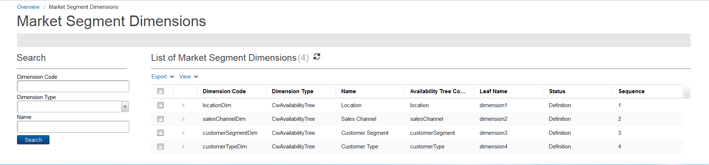
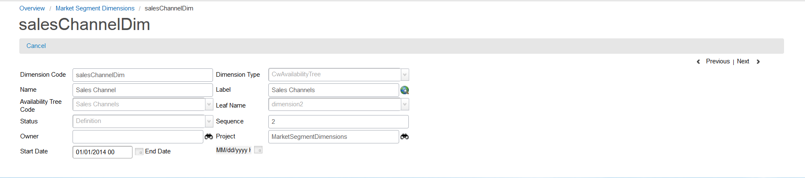

Market Segments
In Catalog, a market segment plays an important role in driving the rules and conditions of defining an item.
In past releases, you could work with market segment-based rules in two ways:
- Rules (that is, availability, eligibility, and conditions) that can be written in either the Catalog Rule Language or JavaScript.
- Another way to define availability of an offer is associating items to availability trees.
This release provides a new way of building rules based on market segment. These rules can be used for availability or eligibility. The Catalog maintenance user interface provides support to specify these rules for availability of an offer. In future releases, support can be extended to other item associations that are conditional.
According to TM Forum, a market segment consists of the following:
- Locations in which an offer is available and sales channels through which an offer is sold
- Offers are available for customers of a certain type or subtype, in a certain age group, with a certain household income, if residential
This model can be extended based on each specific customer requirement. The following market segment rule dimensions can be defined as either availability trees or free form values (that is, either a number or string):
- salesChannel
- customerSegment
- customerType (new, existing, and so on)
- revenue
- ageGroup
- internetUsage
- population (free form number)
Rule Persistence and Its Model
The MarketSegmentRuleModel is a type of rule. This model defines the rule's dimensions, which can be of type Tree, String,or Number. The recommendation is that if the dimension is a list of values, it needs to be stored as CwAvailabilityTrees. If the list contains free form string or number values, it needs to be stored as either a string or number. The model is extendable, but you cannot delete dimensions once you have defined them.
The following are the entities used to define and store MarketSegmentRuleModel:
To be able to run this rule, a predefined context variable is required to evaluate these rules, which is theMarketSegmentRuleContext. See the JavaScript documentation for APIs that all you to set this context variable.
Note: To associate a market segment to an item, see the Associate a market segment page for details.
MarketSegmentDimensions
The MarketSegmentDimensions entity contains the following columns:
- dimensionCode
- msRuleContextAttributeCode (it refers to the rule context attribute code, or it is assumed that the dimensionCode directly maps to the ruleContextAttributeCode)
- dimensionType (CwAvailabilityTree, Number, String)
- treeCode (it is only used if the dimension type is CwAvailabilityTree)
- name
- label
- sequence (it drives the column sequence in the marketSegment column)
- marketSegmentRuleLeaf (the variable name in the Market Segment Rule table)
You can access market segment dimensions by clicking Technical Configuration > Market Segment Definitions from the Quick Start menu.

The Market Segment Dimensions page contains the following fields:
| Field |
Description |
| Dimension Code |
This field denotes the code for the market segment dimension. |
| Dimension Type |
This field contains the type for the market segment dimension. |
| Name |
This field represents the name of the market segment dimension. |
| Availability Tree Code |
This field indicates the availability tree code of the market segment dimension. |
| Leaf Name |
This field indicates the variable name associated with the market segment dimension. |
| Status |
This field denotes a list of available statuses for the market segment dimension (for example, Definition and Active). |
Double-clicking any market segment dimension from the list allows you to view its details:

The Market Segment Dimensions details page contains the following fields:
| Field |
Description |
| Dimension Code |
This field denotes the code for the market segment dimension. |
| Dimension Type |
This field contains the type for the market segment dimension. |
| Name |
This field represents the name of the market segment dimension. |
| Label |
This field contains the field's visual label displayed at runtime, which is used in the application user interface. |
| Availability Tree Code |
This field indicates the availability tree code of the market segment dimension. |
| Leaf Name |
This field indicates the variable name associated with the market segment dimension. |
| Status |
This field denotes a list of available statuses for the market segment dimension (for example, Definition and Active). |
| Sequence |
This field contains the market segment dimension code's sequence position in the model. |
| Owner |
This field represents the position of the user who created the project. Only users with the same position or higher can access the project data. This value cannot be changed. Refer to Domains for more information. |
| Project |
This field indicates with which project the market segment dimension is associated. Each object is assigned to a project. This field defaults to the active or opened project when the market segment dimension is first created. |
| Start Date |
This field represents the start (effective) date that the market segment dimension is available. Refer to Start and End dates for details. |
| End Date |
This field indicates the date when the market segment dimension is no longer effective. Refer to Start and End dates for details. |
MarketSegmentRule
The MarketSegmentRule entity is persisted in the MarketSegmentRule table. The out-of-box market segment rule has following columns:
- id
- locationCode
- salesChannelCode
- customerSegment
- ageGroup
- revenue
- treeOperator (Include or Exclude)
The marketSegmentRule document persistence and read are implemented in such a way that specific Catalog implementations can extend their model. You cannot delete any columns, but you can add new columns to this table for more trees. These new columns require a schema change, so they cannot be added on the fly.
Include and Exclude operators
By default, the operator is Include. The following table describes three different scenarios:
- If the context is Location: Ontario and Channel: Ch1, the rule returns true.
- If the context is Location: Toronto and Channel: Ch3, the rule returns false.
- If the context is Channel: Ch3, the rule returns true.
| Rule Number |
Location |
Sales Channel |
Customer Segment |
Age Group |
Revenue |
Operator |
| R1 |
Ontario |
Ch1 |
Residential |
|
|
Include |
| R2 |
Toronto |
|
|
|
|
Exclude |
| R3 |
|
Ch3 |
|
|
|
Include |
itemMarketSegmentRule
The itemMarketSegmentRule association has been extended to support the marketSegmentRule type.
- These rules are only used to define availability rules.
- These availability rules are an association between an item, new dates, and the marketSegmentRule.
- If some items do not use any dates model, the new dates are null.
The following table depicts the aforementioned itemMarketSegmentRule model and shows the item rule for a typical logger:
| itemRuleVersionId |
itemMarketSegmentRuleCode |
itemCode |
catalogObjectType |
catalogObjectCode |
ruleType |
marketSegmentRuleDocId |
startDate |
endDate |
| ID1 |
R1 |
Item2 |
Item |
null |
availability |
MSR1 |
D1 |
null |
| ID2 |
R2 |
Item1 |
Item |
null |
availability |
MSR2 |
D1 |
null |
Sample data file
A sample data file, sampleMarketSegmentsandBusinessDatesModel.zip, is available in the product. This file contains preconfigured data for availability trees, market segment dimensions, and business date models that you can import. This file appears in your <installation_folder>\modules\catalog folder.
|